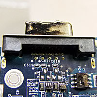
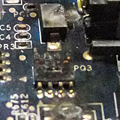
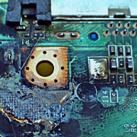
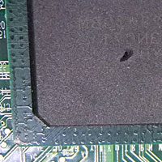
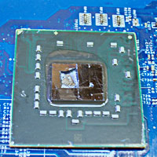

ПРОБЛЕМИ ОТ ФАЗОВИ РАЗЛИКИ И ТОКОВИ УДАРИ
Този тип проблеми могат да се разделят на две основни групи:
- фазови разлики при включване на външни устройства;
- токови и гръмотевични удари през мрежовите (LAN) карти или захранващите адаптори.
Фазови разлики с външни устройства касаят няколко основни типа проблеми:
- подвключването на лаптопите към телевизори по средством VGA или HDMI изхода на лаптопа. Основния проблем в тези случаи е факта, че много от контактите към които са включени лаптопа и телевизора, не са заземени освен ако не сте ги измерили и заземили лично. Допълнително влияе и факта, че наземните кабелни телевизии (не сателитните) не са занулени (те няма как да се занулят). Когато тези проблеми са налице се създава фазова разлика между лаптопа и телевизора. Ако подвключването на интефейсния кабел между тях стане, когато и двете устройства работят, възниква фазова разлика между лаптопа и телевизора, която формира огромен ток понякога довеждайки до буквално възпламеняване на чипове и участъци от платката. Фазовата разлика между лаптопа и телевизора се избягва много лесно, като се занулят контактите за 220V, за телевизора се закупува галваничен разединител (или сплитер), който галванически да го разедини от незанулената кабелна телевизия и не на последно място трябва да знаете, че интерфейсния кабел трябва да се включва, когато устройствата са изключени (желателно е да са изключени дори от 220V).
Ако възникне този тип проблем със сигурност дефектира минимум северния мост и/или видеочипа ако лаптопа има такъв. Вижте какво оставят по лаптопите фазовите разлики при включване на телевизор:



- включване на външни тонколони с усилвател към лаптопите. При този случай обикновено причината е включване на тонколоните към различни контакти или към незанулени такива. Фазовата разлика се проявява най-често след включване на интерфейсния кабел между лаптопа и колоните, когато и двете устройства са включени (функционират). Съветите в тези случаи са устройствата да бъдат включени към един и същ занулен контакт и интерфейсния кабел да се включва, когато устройствата са изключени (желателно е да са изключени дори от 220V). Ако възникне този тип проблем със сигурност дефектира минимум южния мост.
- токови и гръмотевични удари. Това са проблеми, над които най-малко имаме влияние. Може да вземем всички мерки, но не сме застраховани от токов удар върху нашия лаптоп. Ако желаете да вземете мерки срещу това трябва да се снабдите с разклонител, който има интегриран протектор от пренапрежения. Ако използвате безжичен интернет достъп тогава сте взели всички мерки, но ако използвате кабелен достъп до вашия рутер е желателно да си закупите LAN протектор, който предпазва мрежовата ви платка от пренапрежения. Ако възникне този тип проблем със сигурност дефектира минимум южния мост.
- Включване на дефектни устройства през USB портовете. Ако възникне този тип проблем доста вероятно e да дефектира южния мост.
Ето няколко снимки за онагледяване на проблемите в такива случаи:



Както виждате от снимките, това са най-тежките проблеми. Всеки токов удар може да повлияе както върху чипсетите, така и върху цялостта на дънната платка. Тя може никога повече да не заработи след такъв удар. Затова ви съветваме - спазвайте инструкциите по безопасност на работа, за да нямате такива проблеми!